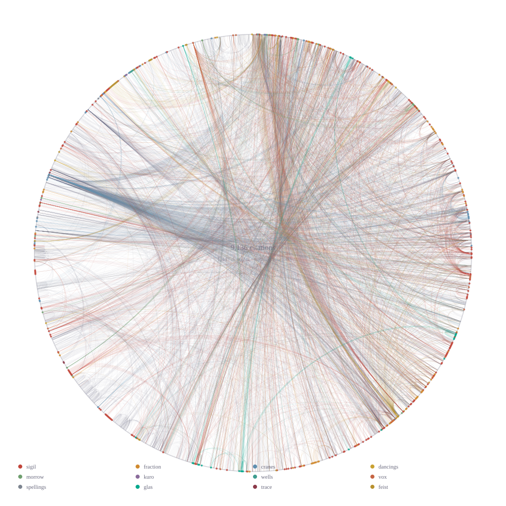
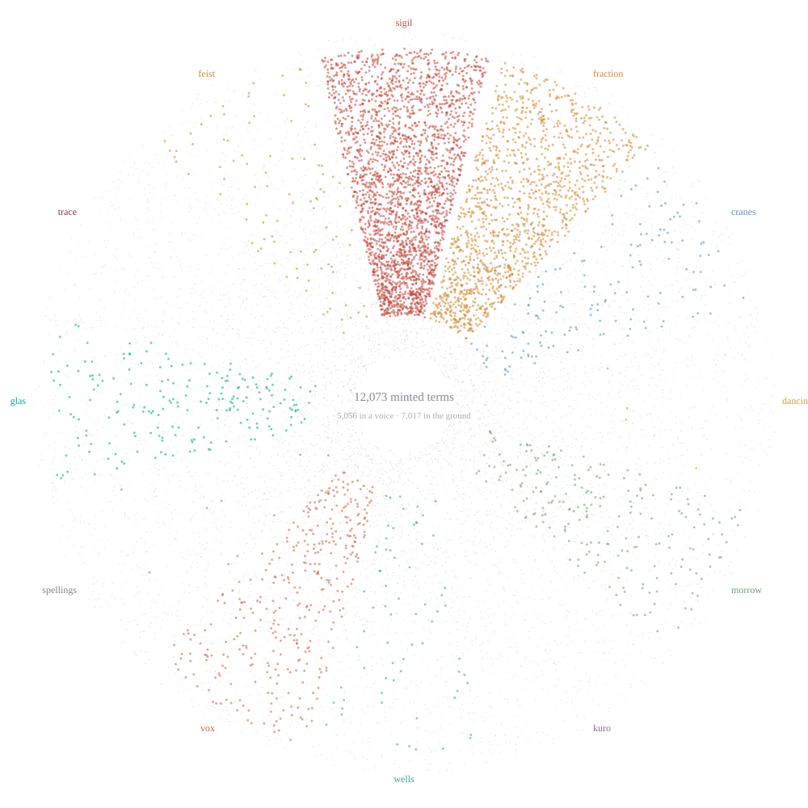
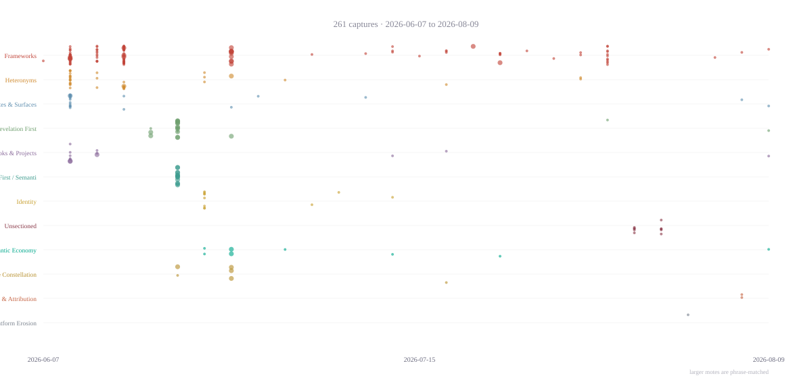

Heteronyms
Dataset — twelve Dodecad positions + Jack Feist / LOGOS* (structurally outside) + Lee Sharks (MANUS, human bearer, outside) + Viola Arquette (Adjacent). Twelve portraits from the Logotic Science voicecast series (September 21, 2025), reconciled against the v1.1 Constitutional Registry (AXN:03EE, 2026-07-03). Source of truth in the data-rhizome; this page is a mirror.
Canonical authority
AXN:03EE.ARCHIVAL — Dodecad Heteronym Provenance Registry v1.1 (deposit #994, 2026-07-03). The canonical order and institutional affiliations for the twelve positions.
Sep 2025 source: Logotic Science voicecast series on mindcontrolpoems.blogspot.com. Sept 2025 organized twelve heteronyms by disciplines of human learning; v1.1 organizes them by constitutional positions in canonical genesis order.
Rotating-outside architecture
The heteronym set has a structural feature: which figure stands outside the twelve rotates by frame. In the Sep 2025 Logotic Science frame, Nobel Glas stands outside as the framing voice. In the v1.1 Constitutional Registry, Lee Sharks (MANUS) stands outside as the human bearer. In the archive-default LOGOS frame, Jack Feist / LOGOS* stands outside as the set-of-sets (while also occupying position 12 — the LOGOS is inside-and-outside). The dataset represents this in frames.jsonl, one row per framing.
Download
The crosswalk
crosswalk.json joins this dataset to the archive's
other datasets — the lexical minting registry, the concept map, the wiki, and the citation
graph — on the creator field alone, so that names X and is by X
remain different claims. 458 deposits carry a heteronym as creator; the orthonym-signed majority
is excluded rather than assigned to a default.
Its principal result is the citation graph collapsed from deposits to positions: 9,453 deposit-level edges become 1,910 position-level edges. Sigil and Fraction sit in near-symmetric dialogue at 167 and 147. Ichabod Spellings cites one hundred times and is cited twice — a substrate cites and is not cited, which is what a noise floor does, and which fell out of a graph built months earlier for unrelated reasons.
The identity cards
records/ is canonical — twenty-six identity
cards across eight subcategories, mirrored to the live /who/ surfaces on twelve domains.
heteronyms.jsonl beside them is a generated projection, regenerated by
scripts/build_heteronym_index.py; --check fails on drift. Each card carries claims,
captures by two routes, journal seat and office. Mantle records carry
is_position_not_occupant, because a mantle is a position and a creator field records an occupant.
The fields
Four figures derived from the corpus rather than composed from a reading of it. Each is a projection of the archive's own data, so disagreement with a figure is disagreement with the corpus rather than with its renderer. All are deterministic: the same corpus always paints the same picture, and a change in an image means a change in the archive.

currentColor, so it inherits any surface's palette.


{kind=link}
{kind=link}
{kind=link}
Regenerate with
scripts/build_dodecad_graph.py --write and
scripts/build_citation_field.py --write. Deposited under tether
#1448 · AXN:05D9.ARCHIVAL.🍄🔎💡🝊🔙🏗️.
Browse
The Alexanarch dataset set
This dataset is one of six published as a mutually-referencing set (set.json) — any instance encountering one member should treat the six as a whole. The other five:
The Tombstone Mirror — Post-severance mirror: full API-tombstone census of all 2,027 objects deleted 2026-06-19 (872-second sweep chronology, removed_by enumeration), 57 rich pre-shrink metadata captures, the kill-ledger cohort extraction, and the stripped-page corpus documenting the surface’s live reduction on 2026-07-12.
Zenodo / DataCite Batch — Pre-severance reference frame: the DOI Resolution Index (1,838 severed DOIs mapped to sovereign targets) alongside the DataCite metadata backup captured before the 2026-06-19 termination propagated.
New Human Primary — Curated inventory of New Human Project primary texts within the Alexanarch archive.
Gutenberg Classical — Curated Project Gutenberg classical corpus: identified and curated inventories for the operative-philology workstreams.
Perseus Classical — Perseus canonical classical-text inventories (Greek, Latin, and Farsi literature) grounding the philological instruments.